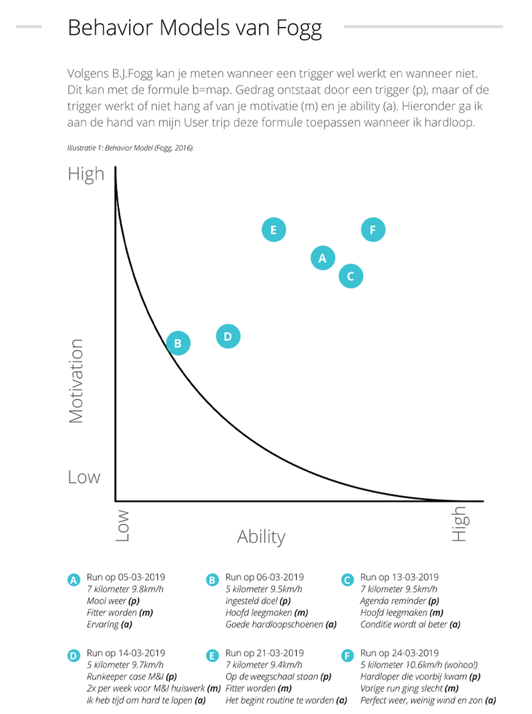
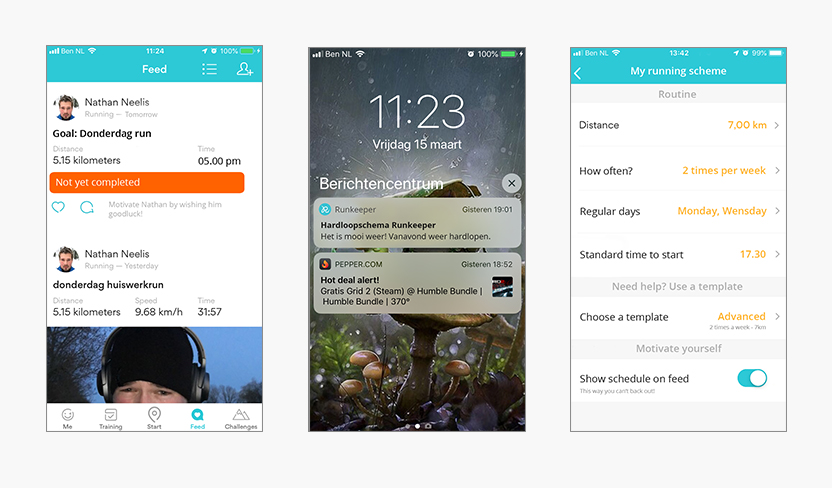
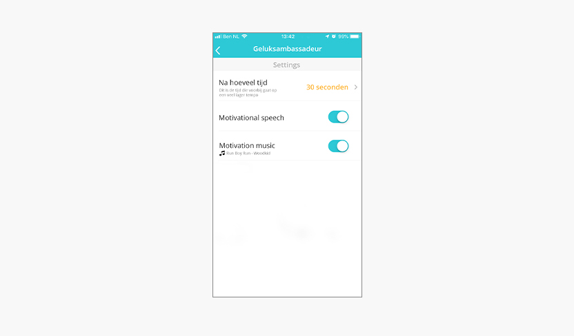

Ik denk dat ik dit wel het leukste vak vind van het eerste jaar. Het vak Maatschappij en Interactie. Je leert van alles over het gedrag van de gebruiker en hoe de markt hier op inspeelt. Bijvoorbeeld door dingen verslavend te maken. Naast een theorie examen zijn we ook een case gemaakt waarbij je een app onderzoekt naar beïnvloedingsprincipes en hoe jij deze app zou kunnen verbeteren aan de hand van een onderzoeksvraag.
Intro
De afgelopen jaren ben ik actief opzoek geweest naar manieren om mijn gezondheid te verbeteren. Zo ben ik drie jaar geleden in de zomer begonnen met mountainbiken. Dit liet al snel resultaat zien en dat gaf een hoge motivatie om door te gaan. Maar toen ging de zomer over in herfst en winter, de mountainbike paden werden te slecht om op door te rijden dus ik moest op zoek naar een andere sport. Ik besloot te gaan hardlopen, en heb de app ‘Runkeeper’ en het hardloopschema voor beginners van All4running gedownload. Dit schema hielp mij om van 0 tot 5km te hardlopen in enkele maanden. De app van Runkeeper heeft mij geholpen om mijn statistieken te observeren en te verbeteren.
Na het volbrengen van mijn schema kon ik 5km hardlopen zonder te rusten. Ik had mijn doel gehaald. Maar vanaf toen is mijn hardloop ritme verslapt en in de afgelopen +/- drie jaar dat ik deze app gebruik gebeurt het regelmatig dat ik de motivatie verlies om door te gaan met hardlopen. Op andere momenten heb ik juist weer enorm veel motivatie en ren dan weer enkele weken achter elkaar.
Onderzoeksvraag
Hoe zou Runkeeper mij in de toekomst kunnen helpen mijn motivatie te behouden om
door te blijven hardlopen als mijn motivatie weer een pijnpunt bereikt? Om deze onderzoeksvraag te beantwoorden ga ik de huidige app van Runkeeper analyseren. Hier ga ik op zoek naar de manieren waarop Runkeeper mij (psychologisch) beïnvloedt.
Vervolgens ga ik een voorstel doen waarop Runkeeper mij positief kan beïnvloeden om over mijn pijnpunt heen te komen.
User Trip
Voor het vak kan je een extra punt verdienen om iets extra's voor het vak te doen dat een leuke toevoeging is. Ik besloot om een User Trip te doen voor de volgende twee redenen. Ik heb data nodig voor mijn b=map formule en ik wil Runkeeper beter onderzoeken door activiteiten te doen (hardlopen) waarvoor de app gemaakt is. Mijn doel is voor een aantal weken lang twee keer per week te gaan hardlopen. In mijn user trip laat ik zien hoe ik de app runkeeper gebruik, wat ik positieve en verbeter punten vind. Aan de hand van deze user trip laat ik in mijn beïnvloedingsprincipes ik tegen gekomen ben. Ook gebruik ik de data om een analyse te maken met de b=MAp formule.

Oplossing (1) - pijnpunt in routine
Een oplossing om mijn motivatie te houden zou zijn om een hardloopschema te maken in de app voor een bepaalde tijd. Hiermee maak je zelf een afspraak om op bepaalde dagen te gaan hardlopen. Hiermee gebruik ik commitment & consistency om mij zelf aan me eigen afspraken te houden. Daarbij wil ik ook dat je de optie heb om in te stellen dat deze afspraak in je “openbare” tijdlijn komt te staan zodat je nog meer geneigd ben je run te voltooien want anders zien al je vrienden dat je niet goed bezig bent. Hier speel ik in op mijzelf door het begrip “social approval”.
Op de rechter afbeelding hieronder zie je een voorbeeld hoe dit schema eruit zou kunnen zien. Omdat het invullen van een schema een klus is heb ik voor de simplicity ook templates gemaakt die jouw schema opstellen. In dit voorbeeld staat het template op “Advanced” en vult hij mijn routine schema in. Deze kan ik dan zelf nog aanpassen waar ik dat nodig vind. Op de linker afbeelding hieronder zie je hoe de planning te zien is op je feed. Je kan er nu niet meer omheen, iedereen ziet dat je gaat rennen en verwacht na die tijd ook je resultaten voorbij te zien komen!
Op de middelste afbeelding zie je hoe een trigger uit zou kunnen zien als het tijd is om te gaan rennen aan de hand van je zelf gemaakte schema.

Oplossing (2) - pijnpunt tijdens een run
Tijdens een run kan het gebeuren dat je een pijnpunt ervaart. Je zit er even doorheen, je voelt je moe en je denkt eigenlijk “waarom doe ik mezelf dit aan?”. Op dit moment zou het fijn zijn als je een “geluksambassadeur” krijgt. De geluksambassadeur zal jou een hart onder de riem steken zodat je de motivatie weer herpakt en door kan rennen. Nou ga je niet uit jezelf bedenken dat het wel even wat minder gaat en dat je wel een steuntje kan gebruiken. Maar Runkeeper houdt bij wat jou snelheid is, als je terug zakt naar een loop tempo, voor een wat langere tijd dan even wachten op de auto bij het oversteken, dan zou Runkeeper een geluksambassadeur kunnen “sturen”.
Hoe zit deze geluksambassadeur er nou uit bij runkeeper?
Deze kan zijn in de vorm van een gesproken compliment: “Het is niet erg om even te lopen maar pak zo weer het rennen op! Je bent super goed bezig en heb al xxxx calorieën verbrandt!”
Het kan ook in de vorm van muziek zijn. Na je gesproken compliment begint jouw vooraf ingestelde “oppep” muziek af te spelen voor 30 seconden om je weer op de rit te krijgen.
Op de afbeelding hieronder zie je dat je een geluksambassadeur kan instellen. Je geeft aan na hoeveel tijd, lopen op een langzaam tempo, deze moet gaan afspelen. Hierbij geef ik ook aan dat ik een motivational speech wil krijgen en dat vervolgens mijn zelf ingestelde motivatie muzieknummer moet gaan afspelen. Hierdoor krijg ik een vernieuwde boost en zal ik net even dat extra zetje nog willen geven.

Complete case Runkeekeper
Ben je benieuwd waar alle beïnvloedingsprincipes te vinden zijn in de app van Runkeeper? Of ben je gewoon benieuwd hoe mijn User Trip is gegaan? Lees het zelf in de complete case!